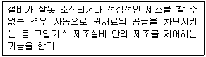
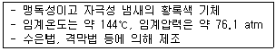

가스기능사 (2011-02-13 기출문제)
1과목: 가스안전관리
1. 공기 중에서 폭발범위가 가장 넓은 가스는?
- C2H4O
- CH4
- C2H4
- C3H8
(정답률: 68%)

2. 아세틸렌을 용기에 충전 시 미리 용기에 다공물질을 채우는데 이때 다공도의 기준은?
- 75% 이상, 92% 미만
- 80% 이상, 95% 미만
- 95% 이상
- 98% 이상
(정답률: 91%)
3. 헤라이드 토치를 사용하여 프레온의 누출검사를 할 때 다량으로 누출될 때의 색깔은?
- 황색
- 청색
- 녹색
- 자색
(정답률: 63%)
4. 다음은 어떤 안전설비에 대한 설명인가?

- 안전밸브
- 긴급차단장치
- 인터록기구
- 벤트스택
(정답률: 87%)
5. 물체의 상태변화 없이 온도변화만 일으키는데 필요한 열량을 무엇이라 하는가?
- 현열
- 잠열
- 열용량
- 대사량
(정답률: 79%)
6. 조정압력이 3.3 kPa 이하인 LP가스용 조정기 안전장치의 작동정지 압력은?
- 5.04 ~ 7.0kPa
- 5.60 ~ 7.0kPa
- 5.04 ~ 8.4kPa
- 5.60 ~ 8.4kPa
(정답률: 64%)
7. 다음 각 금속재료의 가스 작용에 대한 설명으로 옳은 것은?
- 수분을 함유한 염소는 상온에서도 철과 반응하지 않으므로 철강의 고압용기에 충전할 수 있다.
- 아세틸렌은 강과 직접 반응하여 폭발성의 금속아세틸라이드를 생성한다.
- 일산화탄소는 철족의 금속과 반응하여 금속카르보닐을 생성한다.
- 수소는 저온, 저압하에서 질소와 반응하여 암모니아를 생성한다.
(정답률: 52%)
8. LPG사용시설의 고압배관에서 이상 압력 상승 시 압력을 방출할 수 있는 안전장치를 설치하여야 하는 저장능력의 기준은?
- 100kg 이상
- 150kg 이상
- 200kg 이상
- 250kg 이상
(정답률: 49%)
9. 고압가스 판매소의 시설기준에 대한 설명으로 틀린 것은?
- 충전용기의 보관실은 불연재료를 사용한다.
- 가연성가스·산소 및 독성가스의 저장실은 각각 구분하여 보관한다.
- 용기보관실 및 사무실은 동일 부지 안에 설치하지 않는다.
- 산소, 독성가스 또는 가연성가스를 보관하는 용기 보관실의 면적은 각 고압가스별로 10m2 이상으로 한다.
(정답률: 76%)
10. 차량에 고정된 탱크운반차량에서 돌출부속품의 보호조치에 대한 설명으로 틀린 것은?
- 후부취출식 탱크의 주밸브는 차량의 뒷범퍼와의 수평거리가 30㎝ 이상 떨어져 있어야 한다.
- 부속품이 돌출된 탱크는 그 부속품의 손상으로 가스가 누출되는 것을 방지하는 조치를 하여야 한다.
- 탱크주밸브와 긴급차단장치에 속하는 밸브를 조작상자 내에 설치한 경우 조작상자와 차량의 뒷범퍼와의 수평거리는 20㎝ 이상 떨어져 있어야 한다.
- 탱크주밸브 및 긴급차단장치에 속하는 부속품이 돌출된 저장탱크는 그 부속품을 차량의 좌측면이 아닌 곳에 설치한 단단한 조작상자 내에 설치하여야 한다.
(정답률: 50%)
11. 고압가스 설비에 설치하는 압력계의 최고눈금에 대한 측정범위의 기준으로 옳은 것은?
- 상용압력의 1.0배 이상, 1.2배 이하
- 상용압력의 1.2배 이상, 1.5배 이하
- 상용압력의 1.5배 이상, 2.0배 이하
- 상용압력의 2.0배 이상, 3.0배 이하
(정답률: 84%)
12. 고압가스의 분출에 대하여 정전기가 가장 발생되기 쉬운 경우는?
- 가스가 충분히 건조되어 있을 경우
- 가스 속에 고체의 미립자가 있을 경우
- 가스의 분자량이 작은 경우
- 가스의 비중이 큰 경우
(정답률: 69%)
13. 고압가스 일반제조시설의 밸브가 돌출한 충전용기에서 고압가스를 충전한 후 넘어짐 방지조치를 하지 않아도 되는 용량의 기준은 내용적이 몇 L 미만일 때 인가?
- 5
- 10
- 20
- 50
(정답률: 54%)
14. LPG 충전·집단공급 저장시설의 공기에 의한 내압 시험 시 상용압력의 일정 압력 이상으로 승압한 후 단계적으로 승압시킬 때, 상용압력의 몇 % 씩 증가시켜 내압시험압력에 달하였을 때 이상이 없어야 하는가?
- 5
- 10
- 15
- 20
(정답률: 78%)
15. 염소가스 저장탱크의 과충전 방지장치는 가스 충전량이 저장탱크 내용적의 몇 %를 초과할 때 가스충전이 되지 않도록 동작하는가?
- 60%
- 70%
- 80%
- 90%
(정답률: 85%)
16. 가연성 가스라 함은 폭발한계의 상한과 하한의 차가 몇 % 이상인 것을 말하는가?
- 10%
- 20%
- 30%
- 40%
(정답률: 81%)
17. 액화석유가스(LPG) 이송방법과 관련이 먼 것은?
- 압력차에 의한 방법
- 온도차에 의한 방법
- 펌프에 의한 방법
- 압축기에 의한 방법
(정답률: 67%)
18. 고압가스 용기 보관실에 충전 용기를 보관할 때의 기준으로 틀린 것은?
- 충전 용기와 잔가스 용기는 각각 구분하여 용기보관 장소에 놓는다.
- 용기보관 장소의 주위 5㎝ 이내에는 화기 또는 인화성 물질이나 발화성 물질을 두지 아니한다.
- 충전 용기는 항상 40℃ 이하의 온도를 유지하고, 직사광선을 받지 않도록 조치한다.
- 가연성가스 용기보관 장소에는 방폭형 휴대용 손전등 외의 등화를 휴대하고 들어가지 아니한다.
(정답률: 78%)
19. 충전 용기를 차량에 적재하여 운반하는 도중에 주차하고자 할 때의 주의사항으로 옳지 않은 것은?
- 충전 용기를 적재한 차량은 제1종 보호시설로부터 15m 이상 떨어지고, 제2종 보호시설이 밀집된 지역은 가능한 한 피한다.
- 주차 시에는 엔진을 정지시킨 후 주차브레이크를 걸어 놓는다.
- 주차를 하고자 하는 주위의 교통상황·지형조건·화기 등을 고려하여 안전한 장소를 택하여 주차한다.
- 주차 시에는 긴급한 사태에 대비하여 바퀴 고정목을 사용하지 않는다.
(정답률: 91%)
20. 다음 중 지진감지장치를 반드시 설치하여야 하는 도시가스 시설은?
- 가스도매사업자 인수기지
- 가스도매사업자 정압기지
- 일반도시가스사업자 제조소
- 일반도시가스사업자 정압기
(정답률: 57%)
21. 다음 중 아황산가스의 제독제가 아닌 것은?
- 소석회
- 가성소다 수용액
- 탄산소다 수용액
- 물
(정답률: 64%)
22. 암모니아가스 검지경보장치는 검지에서 발신까지 걸리는 시간은 얼마 이내로 하는가?
- 30초
- 1분
- 2분
- 3분
(정답률: 63%)
23. 가정에서 액화석유가스(LPG)가 누출될 때 가장 쉽게 식별 할 수 있는 방법은?
- 냄새로서 식별
- 리트머스 시험지 색깔로 식별
- 누출 시 발생되는 흰색 연기로 식별
- 성냥 등으로 점화시켜 봄으로써 식별
(정답률: 83%)
24. 압축 또는 액화 그 밖의 방법으로 처리할 수 있는 가스의 용적이 1일 100m3 이상인 사업소는 압력계를 몇 개 이상 비치하도록 되어 있는가?
- 1
- 2
- 3
- 4
(정답률: 85%)
25. 도시가스 공급시설 중 저장탱크 주위의 온도상승방지를 위하여 설치하는 고정식 물분무장치의 단위면 적당 방사 능력의 기준은? (단, 단열재를 피복한 준내화구조 저장탱크가 아니다.)
- 2.5L/분·m2 이상
- 5L/분·m2 이상
- 7.5L/분·m2 이상
- 10L/분·m2 이상
(정답률: 66%)
26. 고압가스 저장탱크 및 처리설비에 대한 설명으로 틀린 것은?
- 가연성 저장탱크를 2개 이상 인접 설치 시에는 0.5m 이상의 거리를 유지한다.
- 지면으로부터 매설된 저장탱크 정상부까지의 깊이는 60㎝ 이상으로 한다.
- 저장탱크를 매설한 곳의 주위에는 지상에 경계표지를 한다.
- 독성가스 저장탱크실과 처리설비실에는 가스누출검지 경보장치를 설치한다.
(정답률: 71%)
27. 수성가스의 주성분으로 바르게 이루어진 것은?
- CO, CO2
- CO2, N2
- CO, H2O
- CO, H2
(정답률: 60%)
28. 용기의 내부에 절연유를 주입하여 불꽃, 아크 또는 고온발생 부분이 기름 속에 잠기게 함으로써 기름면 위에 존재하는 가연성 가스에 인화되지 않도록 한 방폭구조는?
- 압력 방폭구조
- 유입 방폭구조
- 내압 방폭구조
- 안전중 방폭구조
(정답률: 76%)
29. 프로판 15vol%와 부탄 85vol%로 혼합된 가스의 공기 중 폭발하한 값은 얼마인가? (단, 프로판의 폭발하한 값은 2.1%로 하고, 부탄은 1.8%로 한다.)
- 1.84
- 1.88
- 1.94
- 1.98
(정답률: 58%)
30. 체적 0.8m3 의 용기에 16kg 의 가스가 들어 있다면 이 가스의 밀도는?
- 0.⑤kg/m3
- 8kg/m3
- 16kg/m3
- 20kg/m3
(정답률: 59%)
2과목: 가스장치 및 기기
31. 햄프슨식이라고도 하며 저장조 상부로부터의 압력과 저장조 하부로부터의 압력의 차로써 액면을 측정하는 것은?
- 부자식 액면계
- 차압식 액면계
- 편위식 액면계
- 유리관식 액면계
(정답률: 82%)
32. 코일장에 감겨진 백금선의 표면으로 가스가 산화반응할 때의 발열에 의해 백금선의 저항 값이 변화하는 현상을 이용한 가스검지방법은?
- 반도체식
- 기체열전도식
- 접촉연소식
- 액체열전도식
(정답률: 54%)
33. 대기차단식 가스보일러에서 반드시 갖추어야 할 장치가 아닌 것은?
- 저수위안전장치
- 압력계
- 압력팽창탱크
- 헛불방지장치
(정답률: 50%)
34. 원심펌프를 직렬로 연결하여 운전할 때 양정과 유량의 변화는?
- 양정-일정, 유량-일정
- 양정-증가, 유량-증가
- 양정-증가, 유량-일정
- 양정-일정, 유량-증가
(정답률: 71%)
35. 초저온용 가스를 저장하는 탱크에 사용되는 단열재의 구비조건으로 틀린 것은?
- 밀도가 클 것
- 흡수성이 없을 것
- 열전도도가 작을 것
- 화학적으로 안정할 것
(정답률: 62%)
36. 다음 중 특정설비가 아닌 것은?
- 차량에 고정된 탱크
- 안전밸브
- 긴급차단장치
- 압력조정기
(정답률: 44%)
37. 고속회전하는 임펠러의 원심력에 의해 속도에너지를 압력에너지로 바꾸어 압축하는 형식으로서 유량이 크고 설치면적이 적게 차지하는 압축기의 종류는?
- 왕복식
- 터보식
- 회전식
- 흡수식
(정답률: 70%)
38. 루트 미터에 대한 설명으로 옳은 것은?
- 설치공간이 크다.
- 일반 수용가에 적합하다.
- 스트레이너가 필요 없다.
- 대용량의 가스 측정에 적합하다.
(정답률: 63%)
39. 액화산소 및 LNG 등에 사용할 수 없는 재질은?
- Al 합금
- Cu 합금
- Cr 강
- 18-8 스테인리스강
(정답률: 47%)
40. 액주식 압력계에 사용되는 액체의 구비조건으로 틀린 것은?
- 화학적으로 안정되어야 한다.
- 모세관 현상이 없어야 한다.
- 점도와 팽창계수가 작아야 한다.
- 온도변화에 의한 밀도변화가 커야 한다.
(정답률: 84%)
41. 다음 중 액면계의 측정방식에 해당하지 않는 것은?
- 압력식
- 정전용량식
- 초음파식
- 환상천평식
(정답률: 66%)
42. 흡입압력이 대기압과 같으며 최종압력이 15kgf/cm2·g인 4단 공기압축기의 압축비는 약 얼마인가? (단, 대기압은 1kgf/cm2로 한다.)
- 2
- 4
- 8
- 16
(정답률: 40%)
43. LP가스의 이송설비에서 펌프를 이용한 것에 비해 압축기를 이용한 충전방법의 특징이 아닌 것은?
- 충전시간이 길다.
- 잔가스회수가 가능하다.
- 압축기의 오일이 탱크에 들어가 드레인의 원인이 된다.
- 베이퍼록 현상이 없다.
(정답률: 55%)
44. 저온장치 진공 단열법에 해당되지 않는 것은?
- 고진공 단열법
- 격막 진공 단열법
- 분말 진공 단열법
- 다중 진공 단열법
(정답률: 54%)
45. 고압가스 용기에 사용되는 강의 성분원소 중 탄소, 인, 황 및 규소의 작용에 대한 설명으로 옳지 않은 것은?
- 탄소량이 증가하면 인장강도는 증가한다.
- 황은 적열취성의 원인이 된다.
- 인은 상온취성의 원인이 된다.
- 규소량이 증가하면 충격치는 증가한다.
(정답률: 55%)
3과목: 가스일반
46. 다음과 같은 특징을 가지는 가스는?

- CO
- Cl2
- COCl2
- H2S
(정답률: 65%)
47. 프로판 용기에 50kg 의 가스가 충전되어 있다. 이때 액상의 LP가스는 몇 L 의 체적을 갖는가? (단, 프로판의 액 비중량은 0.5kg/L 이다.)
- 25
- 50
- 100
- 150
(정답률: 56%)
48. 1.0332kg/cm2·a는 게이지 압력(kg/cm2·g)으로 얼마인가? (단, 대기압은 1.0332kg/cm2 이다.)
- 0
- 1
- 1.0332
- 2.0664
(정답률: 60%)
49. 압력의 단위로 사용되는 SI 단위는?
- atm
- Pa
- psi
- bar
(정답률: 63%)
50. 아세틸렌에 대한 설명으로 틀린 것은?
- 공기보다 무겁다.
- 일반적으로 무색, 무취이다.
- 폭발 위험성이 있다.
- 액체 아세틸렌은 불안정하다.
(정답률: 67%)
51. 도시가스에 첨가하는 부취제가 갖추어야 할 성질로 틀린 것은?
- 독성이 없을 것
- 극히 낮은 농도에서도 냄새가 확인될 수 있을 것
- 가스관이나 가스미터에 흡착이 잘 될 것
- 배관내의 상용온도에서 응축하지 않을 것
(정답률: 81%)
52. 다음 중 물과 접촉 시 아세틸렌가스를 발생하는 것은?
- 탄화칼슘
- 소석회
- 가성소다
- 금속칼륨
(정답률: 63%)
53. 일산화탄소 가스의 용도로 알맞은 것은?
- 메탄올 합성
- 용접 절단용
- 암모니아 합성
- 섬유의 표백용
(정답률: 65%)
54. 다음 중 조연성(지연성) 가스는?
- H2
- O3
- Ar
- NH3
(정답률: 64%)
55. 고압고무호스에 사용하는 부품 중 조정기 연결부 이음쇠의 재료로서 가장 적당한 것은?
- 단조용 황동
- 쾌삭 황동
- 스테인리스 스틸
- 아연 합금
(정답률: 48%)
56. 주기율표의 0 족에 속하는 불활성 가스의 성질이 아닌 것은?
- 상온에서 기체이며, 단원자 분자이다.
- 다른 원소와 잘 화합한다.
- 상온에서 무색, 무미, 무취의 기체이다.
- 방전관에 넣어 방전시키면 특유의 색을 낸다.
(정답률: 74%)
57. 프로판의 착화온도는 약 몇 ℃정도인가?
- 460 ~ 520
- 550 ~ 590
- 600 ~ 660
- 680 ~ 740
(정답률: 61%)
58. 표준 대기압 상태에서 물의 끓는점을 °R로 나타낸 것은?
- 373
- 560
- 672
- 772
(정답률: 54%)
59. 다음 중 온도의 단위가 아닌 것은?
- 섭씨온도
- 화씨온도
- 켈빈온도
- 헨리온도
(정답률: 90%)
60. 다음 중 표준 대기압에 대하여 바르게 나타낸 것은?
- 적도지방 연평균 기압
- 토리첼리의 진공실험에서 얻어진 압력
- 대기압을 0 으로 보고 측정한 압력
- 완전진공을 0 으로 했을 때의 압력
(정답률: 49%)